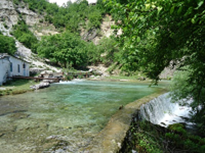

| Kryefaqja | Shtrirja | Historiku | Popullsia | Ansambli Dardania | Peronalitete |
|---|
Malësia e Gjakovës e ka nëntokën shumë të pasur në minerale, si kromi, kuarci, polimetalet, oksidet, asbesti, hekuri dhe ndonjë të dhënë për minerale të rralla. Lartësitë mbi nivelin e detit shkojnë mbi 2700m (mali i Jezercës), mbi 2400m (mali i Shkelzenit), 350m (qyteti i B. Currit), 200m (Fierzë – Dushaj), 1250m (Padeshi), 1280m (maja e Dobrejt), 490m (Zogaj). Një kontrast klimaterik i pazakontë dhe i pakrahasueshëm asnjë nga shtrirjet e tjera gjeografike të trojeve shqiptare.
Tropoja është një zonë tipike malore. Si një pjesë përbërëse e Alpeve Shqiptare, hapësirën më të madhe të sipërfaqes së rrethit e zënë malet e larta. Lartësia mesatare e rrethit të Tropojës është ndër më të lartat në Shqipëri – 1105 m mbi nivelin e detit. Njësitë përbërëse të relievit malor janë:
Rrethi i Tropojës është i pasur me ujëra natyrorë. Zona laget nga lumenj të shumtë, të cilët karakterizohen nga ujëra të kthjellëta me mjaft liqene akullnajore, por edhe burime të pashtershme nëntokësore.
Lumenjtë Tropoja laget nga shtatë lumenj, të cilët krijojnë lugina me vlera turistike dhe shkencore. Ata janë: Lumi i Gashit (lugina e të cilit është shpallur Park Kombëtar i kategorisë së parë - Zonë e mbrojtur strikte), Lumi i Valbonës (lugina e të cilit është shpallur Park Natyror Kombëtar), Lumi i Drinit, Lumi i Currajt, Lumi i Skatinës, Lumi i Sylbicës dhe Lumi i Bytyçit.
Liqenet Liqenet në rrethin e Tropojës janë të natyrës akullnajore, tektonike dhe artificiale. Ato ndikojnë në klimën e zonës, përhapjen e bimësisë dhe nivelin e zhvillimit të faunës. Liqenet kryesore janë: Liqeni i Ponarëve, Liqenet akullnajore të Sylbicës, Dobërdolit, Liqeni i Dashit, Liqenet e Jezercës, Liqenet e Qukut të Dunishës etj. Liqenet artificiale, të ndërtuara nga diga e hidrocentraleve përkatëse, Fierza dhe Komani, përbëjnë një rezervë të madhe natyrore hidroenergjitike.
Burimet ujore Rrethi i Tropojës ka rreth 350 km kanale ujitëse, të cilat përdoren dhe si burime ujore për konsum të popullatës vendase. Një pjesë e tyre ka edhe vlera kurative. Ato gjithashtu shfrytëzohen për përpunimin dhe prodhimin e ujit mineral, si ujërat e Valbonës, Astes etj.Vrella e Shoshanit është një ndër burimet më të mëdha ujore në Ballkan, nga e cila formohet kanioni me të njejtin emër që është vlerësuar në cilësinë e monumentit natyror të rrethit. Burimi ndodhet në hyrje të luginës së Valbonës dhe ka kapacitet të mjaftueshëm për furnizimin e gjithë rrethit me ujë të pijshëm
Malësia e Gjakovës ka florën e mrekullueshme, me lulësi, rrënjë e bimë medicinale më të lakmueshmet. Me faunën impresionante të llojeve më të veçanta të kafshëve të egra, si dhia, kaprolli, ujku I përhimë, derri, ariu i murrmë, dhelpra, vjedulla, ngatarrica (lloj ketri), geri (lloj ketri), nuselala, pula e egër, gjeli i egër, grisha, turtulla, turreci, pěllumbi i egër, qyqja, korbi, sorra, çaçkat, kaçubeti (skifteri), lakuriqët, tricat, gushëbardhi, gushëkuqi, laraska, qukapiku, grishëza, sokoli, orlat, shqiponja etj. Me retinën e llojeve të ndryshme si iriqi, breshka, bretkosa, çapini (zhapiku), hardhuci, gjarpri laraman me gjatësi mbi një metër, me lara e ngjyra në formë rombi, gjarpëri i bokës shumë helmues, gjarpëri I bjeshkës me ngjyrën gri si ngjyra e gurit, gjarpri i lumit, bolla e gjatë mbi dy metra, bollverba (e verbër) etj.